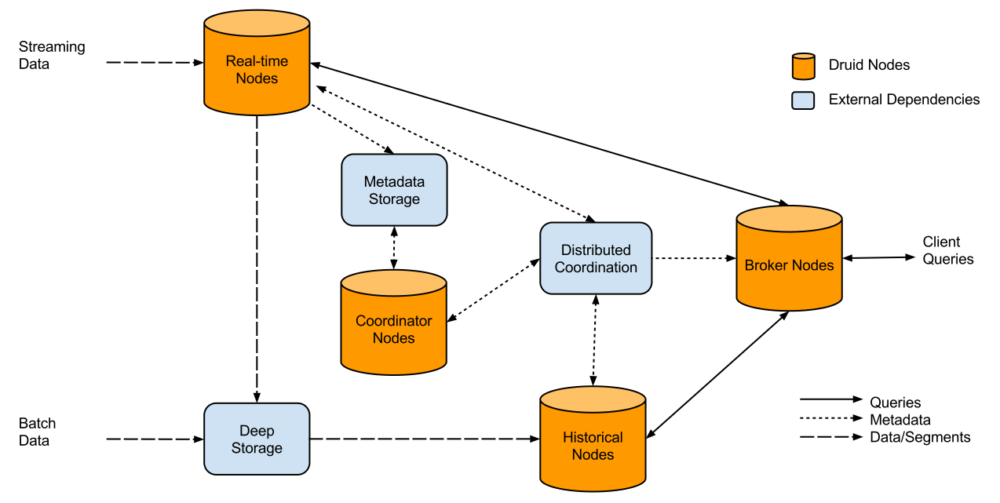

Druid is an open source data store built to allow access to large sets of (real-time and historical) data in a very short time. It was designed for OLAP queries on event data. Runs as a cluster of nodes:

Why is it so fast?
“Roll-up” - summarization of a raw data at ingestion time. Roll-up is a first-level aggregation operation over a selected set of dimensions that can reduce the size of data that needs to be stored
Segments and indexing - Druid creates shards called “segments” which contain data stored in compressed column orientations, along with the indexes for those columns. Druid always first shards data by time.
Column-oriented - aech column is stored separately, so only the columns that pertain to a query are used in that query.
HyperLogLog - algorithm for the count-distinct problem, approximating the number of distinct elements
Druid’s native query language is JSON over HTTP:
{
"queryType": "groupBy",
"dataSource": "Animals",
"granularity": "all",
"dimensions": ["Class", "Race"],
"filter":
{ "type": "or",
"fields": [
{ "type": "selector", "dimension": "Class",
"value": "Mammal" },
{ "type": "selector", "dimension": "Class",
"value": "Bird" }
]
},
"aggregations": [
{ "type": "count", "name": "My_count"}
],
"intervals": [ "2010-06-30T14:13:20.000/2013-08-31T00:00:05.000" ]
}
SQL equivalent
SELECT Class, Race, count(*) as My_count
FROM Animals WHERE Class="Mammal" OR Class="Bird"
AND Time BETWEEN 2012-01-01 AND 2012-01-03 GROUP BY Class, RaceFirst thing we can do is to check what Datasources do we have
library(RDruid)
druid.query.dataSources(url = druid.url(host="my-druid-host",
port=8082))[1] "Animals" "Cars" "DataSource656"
[4] "Sample_DataSource"In RDruid all function responsible for queries starts with:
druid.query.______()
Before running aggregation query we have to know
time interval, metrics and dimensions
time_boundaries <- druid.query.timeBoundary(
url = druid.url(host="my-druid-host",
port=8082), dataSource = "Animals")
time_boundaries$maxTime
[1] "2010-06-30 14:13:20 UTC"
$minTime
[1] "2013-08-31 00:00:05 UTC"
Metrics are columns used in aggregations
Dimensions are column used in filtering
Timestamp column is treated separately
Having time interval we can get dimensions
druid.query.dimensions(url = druid.url(host="my-druid-host",
port=8082), dataSource = "Animals", interval =
interval(time_boundaries$minTime,time_boundaries$maxTime))[1] "Class" "Race" "Color" "Enviroment"and metrics
druid.query.metrics(url = druid.url(host="my-druid-host",
port=8082), dataSource = "Animals", interval =
interval(time_boundaries$minTime,time_boundaries$maxTime))[1] "Weight" "Height" "Nr_of_legs" "Have_tail"
Now we can create previous query in R
druid.query.groupBy(url = druid.url(host="my-druid-host",
port=8082), dataSource = "Animals",
granularity = "all",
dimensions = list(dimension("Class"),dimension("Race")),
filter = dimension("Class")=="Mammal" |
dimension("Class")=="Bird",
aggregations = druid.count(name="My_count"),
intervals = interval(time_boundaries$minTime,time_boundaries$maxTime))